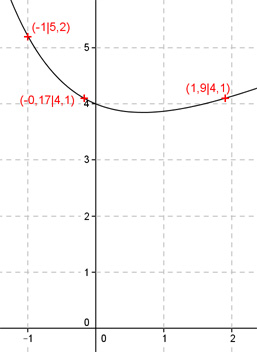
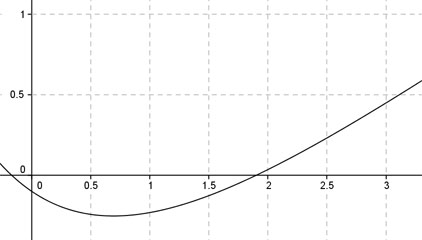

Aufgabe 113 Ergänzen Sie die Wertetabelle für den Graphen: y = 0,5x + 3 + e-x x -1 -0,17 oder 1,9 y 5,2 4,1 y = f((-1)) = 0,5 * (-1) + 3 + e-(-1) y = - 0,5 + 3 + e = 5,2 gerundet  An welchen Stellen x die Funktion den Wert 4,1 annimmt, ist elementar nicht zu ermitteln. Abgelesen: Es sind 2 Stellen. Zur Berechnung wendet man ein Näherungs- verfahren an, hier die Regula falsi. x0 = gesuchte Nullstelle x1 * |y(x2)| + x2 * |y(x1)| x0 = ------------------------------ |y(x1)| + |y(x2)| fx = 4,1 eingesetzt : 4,1 = 0,5x + 3 + e-x | -4,1 0,5x + e-x - 1,1 = 0 Als Funktion: y = 0,5x + e-x - 1,1 Die Nullstellen dieser Funktion (y = 0) entsprechen den gesuchten Werten für x.  Abgelesen: Nullstellen zwischen -0,5 und 0 und zwischen 1,5 und 2. Nullstelle x0 zwischen 1,5 und 2 mit Excel ermittelt: A B C D E F G H I J 1,5 2 0,0354 0,1268 0,0530 0,2537 0,3067 0,1622 1,8910 -0,0036 1,8910 2 0,0354 0,0036 0,0669 0,0071 0,0740 0,0389 1,9009 -0,0001 1,9009 2 0,0354 0,0001 0,0672 0,0001 0,0674 0,0354 1,9011 0,0000 1,9011 2 0,0354 0,0000 0,0672 0,0000 0,0672 0,0354 1,9011 0,0000 1,9011 2 0,0354 0,0000 0,0672 0,0000 0,0672 0,0354 1,9011 0,0000 Die gesuchte Nullstelle ergibt sich nach mehreren Näherungen mit ausreichender Genauigkeit zu x01 = 1,9 gerundet. Erläuterungen zur Tabelle siehe Aufgabe 101. Die Nullstelle zwischen -0,5 und 0 ergibt sich nach dem selben Verfahren zu x02 = -0,17 gerundet.